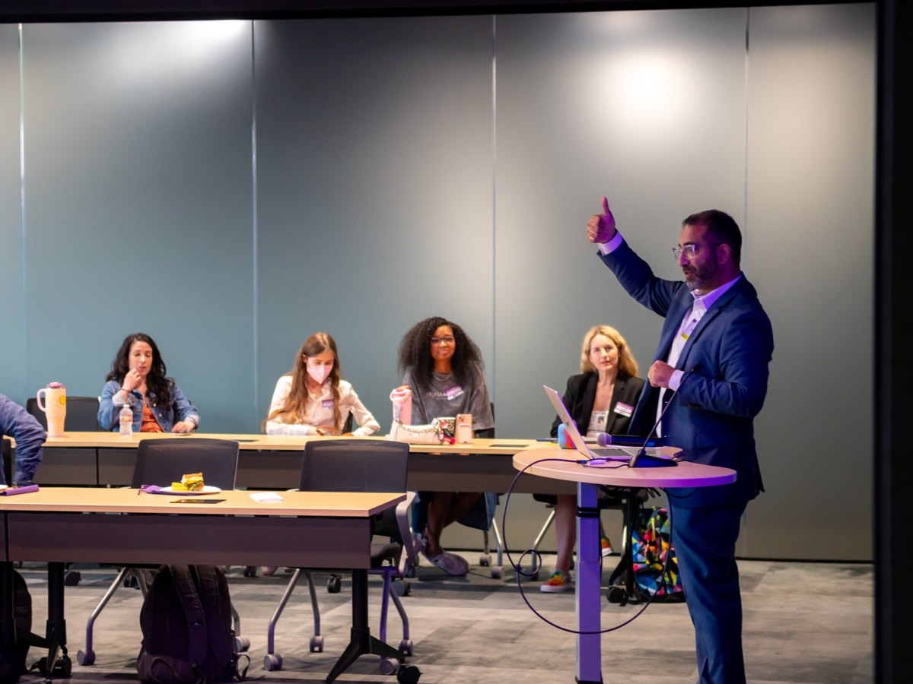
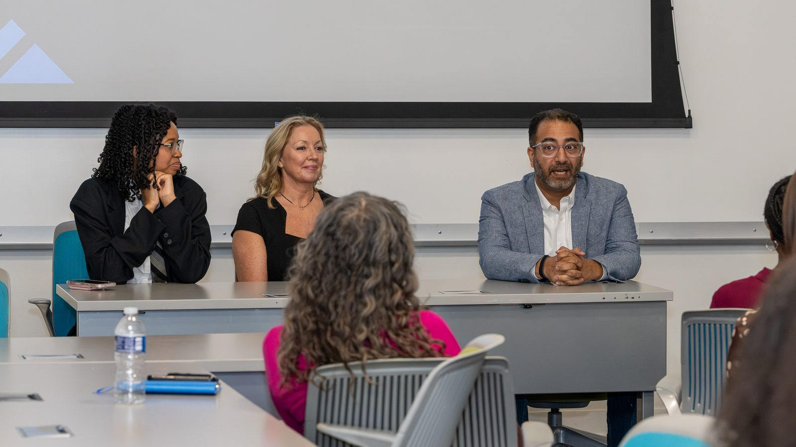
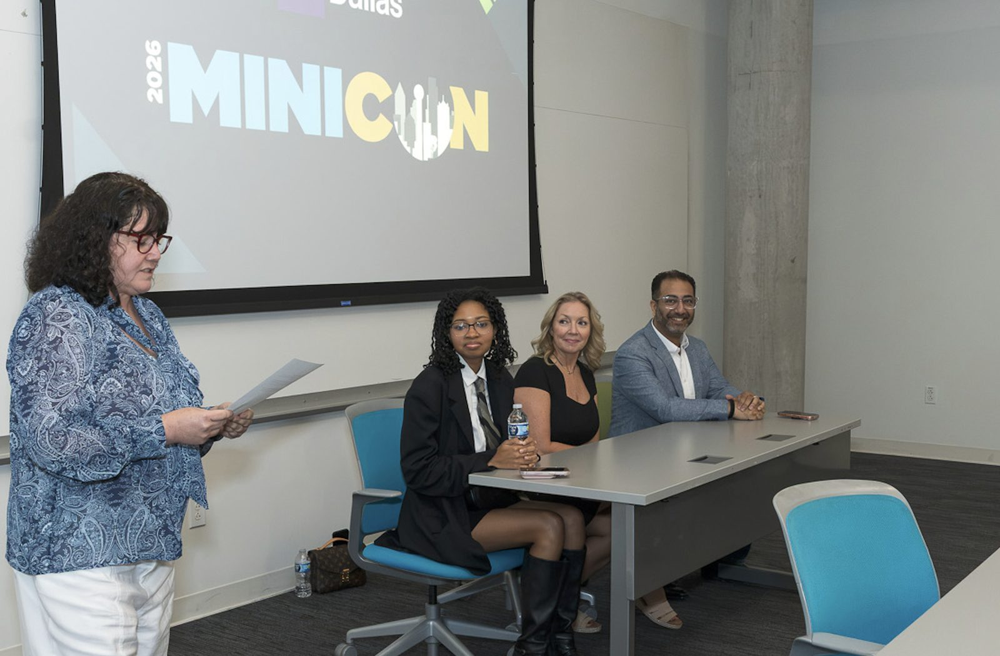
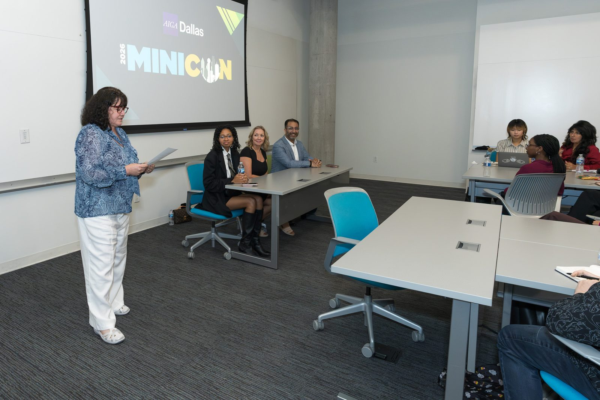
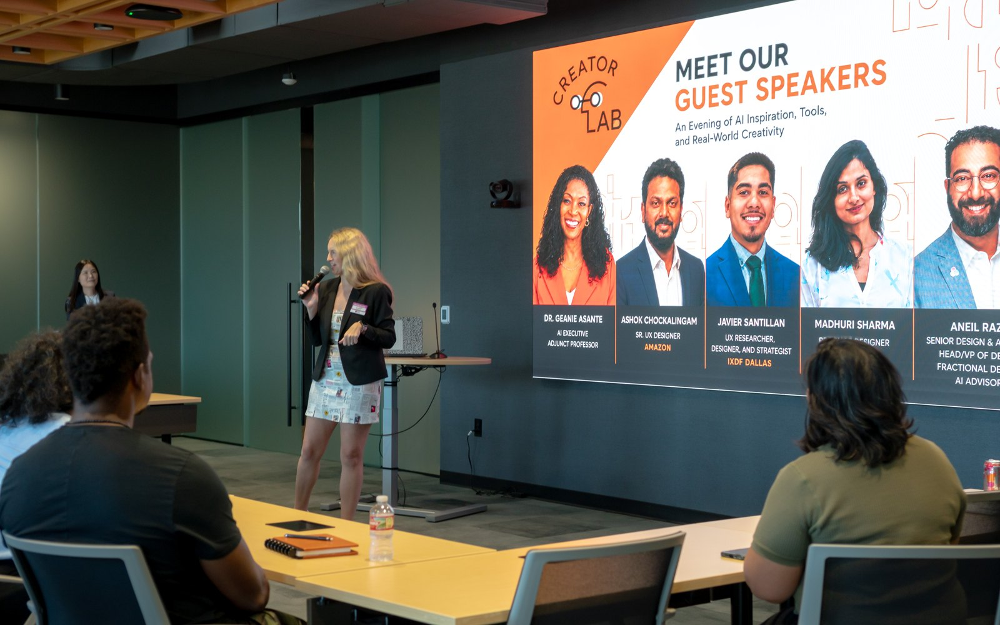

I'm a design and AI leader who turns fragmented, complex products into calm, human ones. Lately I designed and shipped an app solo using AI-assisted tools. I speak to product, design, and leadership audiences who want AI to be useful, not bolted on. Based in Dallas-Fort Worth, available for events worldwide, in person or virtual.

Each talk flexes to a keynote, a fireside chat, or a hands-on workshop, and I tailor the examples to your audience. Here's what people walk away with.
Where AI actually belongs in a product, and a framework your team can design against instead of bolting features onto a roadmap.
How AI coding agents let one person take a real product from concept to the App Store: what changes, what doesn't, and what it means for how teams work.
Why reducing friction is the highest-leverage design skill, and how to build that discipline into a team instead of leaving it to heroics.
Most orgs over-invest in design too early or starve it too long. I help teams read their own design and research maturity, then pick the right level (from AI-assisted, to a fractional lead, to a full in-house function) and build it when they're actually ready.



Mini-Con is AIGA Dallas's student design conference. I joined the industry panel with Erika Udstuen and Mackensie DeBello for an open Q&A with the students in the room.
"He did a fantastic job sharing his insights and adding to the conversations throughout the event."Dr Geanie Asante, Mini-Con 2026 speaker · on LinkedIn

Invited as a guest speaker for an evening built around AI in the creative process: how design leaders can move past the hype to tools and practices that hold up in real work. The kind of room I love: practitioners who want something they can use on Monday.
A selection of keynotes, panels, and workshops, from enterprise summits to the Dallas design community.
Presenting Cubby, my personal project: a caregiver-curated video app, designed and shipped solo using AI-assisted tools.
Open Q&A with design students at AIGA Dallas's student design conference.
with Erika Udstuen & Mackensie DeBello
With hosts Terri Rodriguez-Hong and Laszlo Lazuer: side hustles, why people are scared of AI, drawing it on paper first, and what I'd do with a hundred dollars if I were starting today. Listen to the 23-minute cut or the full episode.
A working hour for founders on the four forms design takes, what each one costs, and why picking the wrong one is how first design hires go sideways.
Speaking on how design leaders move past AI hype to tools and practices that hold up in real work.
One of the invited experts helping emerging designers navigate career questions and portfolio decisions.
Pairing with designers for direct, practical feedback and career mentorship.
How UX and product management can operate as one cohesive team: what to expect from one another, and the value each brings.
A sneak peek into the future Omnitracs One product line, and how channel partners could help shape the vision.
Giving emerging designers no-risk practice interviewing and real feedback on their work and résumé.
A practical panel on merging design into agile, distributed vs. centralized teams, and measuring UX success.
with Dashiel Hermann & Raymond Galang
Brainstorming techniques for generating ideas, and keeping momentum to shape many concepts from one.
with Arielle McMahon
A conversation with channel partners and an early look at the Omnitracs One product line.
Teaching Sketch shortcuts and file structure, and applying atomic design when building a style guide.
Using filmed field research to build radical empathy and turn findings into consensus among stakeholders.
A joint session with TIBCO on the problems designers face day to day, from career growth to cross-team friction.
Why a UI style guide speeds up front-end work and creates consistency from the end user's point of view.
Combining behavioral studies with data analytics (ride-alongs, usability testing, and more) to design better products.
A live UX design demo: improving an application with audience participation and feedback in real time.
How the UX team works directly with drivers and dispatchers to build relevant, impactful applications.
How to prep culture and leadership to embrace an innovation framework that actually drives results.
An open forum on how the development process works end to end, and how to identify new creatives for a team.
How to mentor creatives, map career paths, and build an environment and toolkit that cultivates success.
Facilitating Behance's global Portfolio Review Week, setting the tone and matching junior designers with senior mentors for actionable feedback.
Same substance, shaped to your event. Tell me the room and the goal, and I'll shape the talk to fit.
A 20-45 minute talk that sets the tone or sends the room out with a point of view and something to do about it.
A guided conversation: I'll bring the stories and the candor; you bring the questions your audience actually has.
Hands-on and practical. The audience leaves having done the thing, not just heard about it.
A clear, generous voice on a panel, moving the discussion forward instead of competing for airtime.
"He leads with solutions. Where others see roadblocks, Aneil sees the next move. He takes ambiguous problems, rallies the people around him, and drives toward outcomes that actually matter to the end user."
"What makes him truly exceptional is how he balances creative passion with a highly organized approach. He fosters an environment where people feel supported, inspired, and empowered to do their best work."
"Aneil is one of those dynamic creative leaders that lights up any room he walks into. If you need an energetic and charismatic speaker to help empower your organization, you need an Aneil."
"His presentations and engagements with my channel partners fostered a deep sense of teamwork and engagement. He has always been a sought-after contributor to partner conferences."
What program committees usually ask for, in one place. Copy anything here into your program.
Aneil Razvi is a product design and AI experience leader based in Dallas-Fort Worth. He helps companies decide where AI belongs in their products, and builds the design teams that ship them. He designed and shipped Cubby, his personal project, solo using AI-assisted tools.
Aneil Razvi leads product design and AI experience. He built the design function at SPOTIO, where he set the AI experience strategy and helped shape DASH, an AI co-pilot for sales teams with human approval built in. He helped build the product design department at Southern New Hampshire University, unified Omnitracs's fleet platform, and led design work for Citi, Capital One and Kalkomey. His point of view: design should be sized to where a company actually is, and AI should earn its place in a product instead of being bolted on. He has spoken at Vista UX Summit and AIGA Dallas, teaches AI, Built On Paper, and designed and shipped Cubby, his personal project, solo using AI-assisted tools.
Our next speaker turns complicated products into calm ones. Aneil Razvi built the design function at SPOTIO, helped build the product design department at Southern New Hampshire University, and designed and shipped an app solo using AI-assisted tools. Please welcome Aneil Razvi.
Photos and a headshot on request.
Human-centered AI product design: where AI belongs in a product and how to keep the trust of the people using it. He also speaks on building solo with AI-assisted tools, reducing cognitive load in complex products, and sizing design to a company's maturity. Each talk works as a keynote, a fireside chat or a hands-on workshop.
Yes. He is based in Dallas-Fort Worth, Texas, and travels for events worldwide. He has worked on-site with teams abroad, including in Poland, and he also speaks virtually.
Yes. Every talk uses examples from your industry and is shaped around what your audience needs to do next.
Product and design teams, the leaders who set their direction, founders deciding how much design to invest in, and design students.
Yes. Recent appearances include Ramblings of a Designer, episode 177 (October 2026), and the AIGA Dallas Mini-Con industry panel at UT Dallas (October 2026).
Email hi@aneilrazvi.com with the date, the city, the audience and the format you have in mind, or book a call.
Conference, team offsite, podcast, or panel: if your audience cares about AI, design, and building things that actually ship, let's talk about what would land for them.